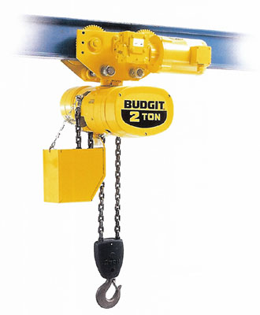

Our Crane & Hoist division has everything from overhead bridge cranes, jib cranes and monorall cranes to wire rope and chain hoists. We also offer replacement parts and service as well as the ability to source parts for any make or model of crane or hoist. Additionally, Total Tool Supply Crane & Hoist is proud to represent top-quality manufacturers such as R&M, Yale, Coffing and Harrington.
Whether building new or adding capacity to an existing facility our experienced sales staff can design and install the perfect material handling system to fit your needs.
View our brochure for more details!We also provide OSHA required annual crane and hoist inspections. And, our experienced inspectors can perform any required repairs testing and upgrades including installation of radio controls.
Bridge Cranes

Jib Cranes
Monorail Cranes
Gantry Cranes
Hoists
Inspections and Services
Bridge Cranes
This web page is intended to give a general understanding of the terminology used in the overhead crane industry. The following explannation of terms should provide you with the information you will need to make an informed decision when purchasing material handling equipment.
You can click on the links to see detailed pictures of the equipment being described.
Bridge Crane Compenents, Types, Terminology
Bridge Crane Types
Top Running - The crane bridge tavels on top of rails mounted on a runway beam supported by either the building columns or columns specifically engineered for the crane.
Under Running - The crane bridge travels on the bottom flange of the runway beam which is usually supported by the roof structure.
Single Grinder - The crane consists of two end trucks, a single bridge girder and the trolley hoist unit. The trolley runs on rails on top of the bridge girders.
Double Girder - The crane consists of two end trucks, two bridge girders and the trolley hoist unit. The trolley runs on rails on top of the bridge girders.
Bridge Components
Bridge - The main traveling structure of the crane which spans the which spans the width of the bay. The bridge consists of two end trucks and one or two bridge girders depending on the equipment type. Bridge Crane Component Diagram
End trucks - Located on either side of the span, the end trucks house the wheels on which the entire crane travels. These wheels ride on the runway beam allowing access to the entire length of the bay.
Bridge Girder(s) - The principal horizontal beam of the crane bridge which supports the trolley and is supported by the endtrucks.
Hoist - The hoist is mounted to the trolley and performs the actual lifting function via a hook or lifting attachment. There are two basic types of hoist. Wire Rope Hoists which are very durable and will provide long term, reliable usage. The other type of hoist is the Chain Hoist. These hoists are used for lower capacity, lighter duty applications and for projects in which cost is a primary deciding factor.
Trolley - The trolley carries the hoist across the bay along the bridge girder(s) traversing the span.
Runway - This is a system of structural steel beams that support the crane. The bridge travels along the runway.
Basic Terminology
Capacity - The maximum weight the crane will be required to lift.
Span - The horizontal distance between the rails of the runway on which the crane is to travel.
Lift or Hook Height - The required distance from the floor to the crane hook. This dimension is critical in most applications as it determines the height of the runway from the floor and is dependent on the clear inside height of the building.
Bridge, Trolley and Lift Speeds - The rate at which the bridge or trolley travels, or at which the hoist lifts, usually in feet per minute or FPM. You may specify either Single Speed or Two Speed travel/lift or a specific rate of speed, (i.e. 120 & 30 FPM bridge travel). Another option as far a motion speeds are concerned is a Variable Frequency Drive. See the Control section for more information.
Controls
Pendant - The pendant gives the operator precise control over the motions of the crane. There are many configurations of pendant depending on the functions of the equipment being controlled. Each push-button on the pendent controls an operating function of the crane. The pendant may be suspended from the Trolley Hoist, requiring the operator to walk with and beside the load, or on a separate sliding track system allowing the operator to move independently of the load.
VFD - A pendant can also be used in conjunction with a Variable Frequency Drive. A VFD is used to vary the frequency of the motors controlling the motions allowing for smooth acceleration and deceleration. The buttons on the pendant operate a VFD unit operated in much the same way as Two Speed control. The first step is held to maintain the current speed while the second step is used for acceleration. Deceleration is achieved by releasing the button entirely. Pressing the button back to the first step will maintain the new slower speed. It should be noted that the deceleration is not achieved through uncontrolled coasting but through a programmable dynamic braking system. The control provided by a VFD allows for a high level of customization.
Radio Control - The radio control performs exactly like the pendant but operates using a radio frequency. The radio control incorporates numerous safety features and allows the operator a greater range of operator motion than a pendant.
Power Supply - The electrical service available in the building for which the crane is being designed (i.e. 460 Volt, 3 phase, 60 Hertz).
Runway - The rails, beams and columns on which the crane operates. The rail, on which the end-trucks run, is fastened to the runway beam. This beam is then supported on columns (Top Running) or from the roof structure (Under Running). The existing building columns can be used or new ones can be supplied with the system. New columns can either be completely Free Standing or Tied Back to the existing building structure for additional lateral support. When designing a runway system that is to use existing building columns, it is important to provide the down shop center to center spacing between them. Conductor supply power to the crane and are mounted on the runway beam.
Jib Cranes
Jib Cranes are an inexpensive alternative to overhead bridge cranes and are more versatile in more applications than monorail cranes or stationary mounted hoists. Most often they are used for coverage over a single welding, assembly or machining work station. Total Tool Supply can provide you with a quote for a complete jib crane system including the jib, hoist, installation, start up and testing.
Jib Crane Types
Free Standing / Floor Mounted Jib Crane
Free Standing/Floor Mounted Jib Cranes are perfect underneath bridge cranes, in open areas where they can serve several work stations, in outdoor applications such as loading docks, or in machining and assembly operations where they can be overlapped with other jib cranes to provide staged coverage.
- Available in floor mounted, insert mounted and sleeve insert mounted styles
- Standard capacities from 500 to 10,000 lbs, with spans up to 20' (Higher capacities & longer spans available as specials)
- 360° rotation with optional collector ring
- Motorized rotation optional
- Installation available by Total Tool Supply
- Generally requires a large concrete footing
Wall Mounted Full Cantilever Jib Crane
Wall Mounted Full Cantilever Jib Cranes provide hoist coverage and 200° rotation for individual use in bays, along walls, or columns of plants, or as a supplement to an overhead crane system. Fully cantilevered jib have the advantage of providing maximum lift for the hoist, since it can be installed very close to the underside of the lowest obstruction. It is composed of a vertical mast mounted to two brackets on a wall or vertical building beam with a boom that cantilevers out, perpendicular from the wall to the top.
- Capacities from 1/4 ton to 5 tons
- Spans up to 20'
- Requires very little head room and exerts less force on the structure it is mounted to
- Requires a structurally adequate wall or column to support the jib, and needs sufficient clearance above the boom
Articulating Jib Cranes
Articulating Jib Cranes offer a material handling solution for applications moving around beams, corners, reaching under or into machinery. Articulating jibs can be floor, wall, ceiling, or bridge crane mounted to best suit your application. Generally articulating Jib Cranes have capacities ranging from 150 to 2,000 lbs. with spans up to 16 feet. Freestanding and ceiling/bridge mounted articulating jib cranes offer 360° rotation. Articulating wall mounted jib cranes offer 200° rotation on inner arm and 360° rotation on the outer arm.
Monorail Crane
With a monorail system, the hoist and trolley run on a single stationary beam. Monorail systems are an effective method of moving and positioning loads to specific locations. Monorails are commonly used for repetitive jobs, such as paint booths or water treatment plants in maintenance applications. The monorail allows two axes of hook movement: up/down and north/south along the monorail beam. There is no lateral motion under th monorail beam.
Total Tool can also design the monorail hoist support structure, including the monorail beams and hangers.
Gantry Cranes
Gantry cranes can be a practical solution when your building will not support a bridge crane, when you only need a crane intermittently or when you need a portable solution. Gantry cranes come in many different sizes.
They can be small enough to be disassembled and put in the back of a truck for transportation to another site or be a permanently installed crane that runs on tracks with capacities of over 25 tons. Smaller gantry cranes can be adjustable in height as well as span making them very versatile. In addition they can be mounted on caster or built to run on tracks in the floor. Some gantry cranes are even built from aluminum.
Total Tool Supply Inc. manufactures specialty gantry cranes. Generally this means a gantry that is over 5 ton capacity or a span greater then 30ft. For smaller cranes we represent several different manufactures of gantry cranes.
Hoists
Total Tool Supply sells, rents, and services all type of powered and manual hoists. We represent the most widely recognized brands in the industry. Including; R&M, Yale, Shaw Box, Coffing, Budgit, and CM. We service the upper Midwest with our locations in, Minnesota, Wisconsin, Nebraska, Kansas, Lowa and Michigan. We offer in-house and on-site repairs for all major brands of hoisting equipment as well as on-site inspections and repairs.
Chain Hoists
Lift by pulling the chain through sprockets and deposting the chain into a chain container are more common for applications below 7.5 tons, require less maintenance, and are typically less expensive.
Wire Rope Hoists
Lifting by wrapping cable around a grooved drum. Dominate the market at 10 tons and above, offer very fast lifting speeds, offer a wide array of options, can be rated H-5 (severe duty).
Total Tool Supply - Your Full Service Crane Company
We can handle everything from new installations, to emergency service, to annual inspections and parts. You will find our staff to be well trained and experienced. Our service technicians come to the job site fully equipped with tools and a man-lift so we can go right to work on your cane. We service and inspect all brands and types of cranes.
Overhead Crane & Hoist Inspections
Crane & Hoist inspections are a comprehensive assessment that when performed will help to ensure compliance, improve safety & reliability, and lower the cost of ownership. Our inspectors are fully trained and equipped to inspect all brands of overhead cranes and hoists. For your convenience, they will provide your report in PDF format for easy storage and retrieval.
Benefits of our Inspections:
- Reliability - minor problems can be corrected before they lead to a breakdown.
- Fast turnaround - You will receive your inspection reports in 24 hours or less, and a proposal for replacement parts and repairs in 5 business days.
- Equipment - Our inspectors are fully equipped including a man life.
- Superior Service - Total Tool can also inspect and repair your manual hoists and rigging while on-site. We can replace and repair defective rigging because we manufacture our own rigging!

How Often Are Crane Inspections Required?
Please note that this section does not cover all possible situations where OSHA may require a crane to be inspected. It is intended to be a general guideline. Below is a link to a document that includes the section of OSHA 1910.179 that deals with overhead crane inspections and copy of typical, daily, monthly, and annual inspection reports.
Overhead Crane Inspection SynopsisRigging, Manual Hoists & Below the Hook Lifters Inspection Synopsis
Daily
The operator is required to perform a simple inspection daily or prior to each shift for plants running multiple shifts. The person performing the inspection must be trained how to conduct the inspection and what to look and listen for. This inspection is not required to be documented.
Monthly
Each month you are required to do a hook and wire rope/chain inspection, the person performing the inspection must be trained on how to perform the inspection. Hook and wire rope inspections must be documented.
Periodically (1 - 12 months)
Dependingspection on usage you are required to do a complete, or what most crane inspection companies call an "annual" inspection of the crane. The person performing the inmust be trained on how to perform the inspection. Periodic inspections must be documented. In most cases performing the periodic inspection annually is sufficient.
Markets Served
We serve the entire states of Minnesota and Wisconsin. We also cover portions of Iowa, North Dakota, and South Dakota.
Our primary markets are:
- Duluth, MN
- Saint Paul, MN
- Hibbing, MN
- Des Moines, IA
- Wausau, WI
- Superior, WI
- Appleton, WI
Overhead Crane & Hoist Repair
Total Tool Supply's experienced service technicians know that downtime is expensive and they are committed to getting you back up and running as soon as possible. Our technicians are fully equipped with a full complement of tools, rigging, and a man lift. We can repair and provide parts for all makes and models of overhead cranes and hoisting equipment.
Most common types of reqairs:
- Replacement wire ropes with installation.
- Electrical troubleshooting.
- Control pendant repairs and replacement.
- Brake repairs and replacements
- Load testing including rental of test weights.
- Gearbox repairs and replacements.
- Runway repairs and alignment.

Total Tool In-House Hoist Repair
Sometimes it is not economical to send a service tech to your site to repair smaller electric chain hoist or manual hoisting equipment such as chain falls or lever hoists. Total Tool has regional repair shops that can handles those repairs. We repair all major brands and models, we can even offer rental hoisting equipment so you can continue to work while your equipment is in for repair.
Markets Served:
- Saint Paul, MN
- Duluth, MN
- Hibbing, MN
- Superior, WI
- Wausau, WI
- Appleton, WI
- Des Moines, IA
- Lincoln, NE
Load Testing
Did you know that every newly installed crane must be load tested prior to being put into service and a record of that test must be kept on-site and provided to OSHA if requested? Total Tool offers load testing services including providing the test weights or a crane scale to measure the weight of a load provided by you.
OSHA load test Standards